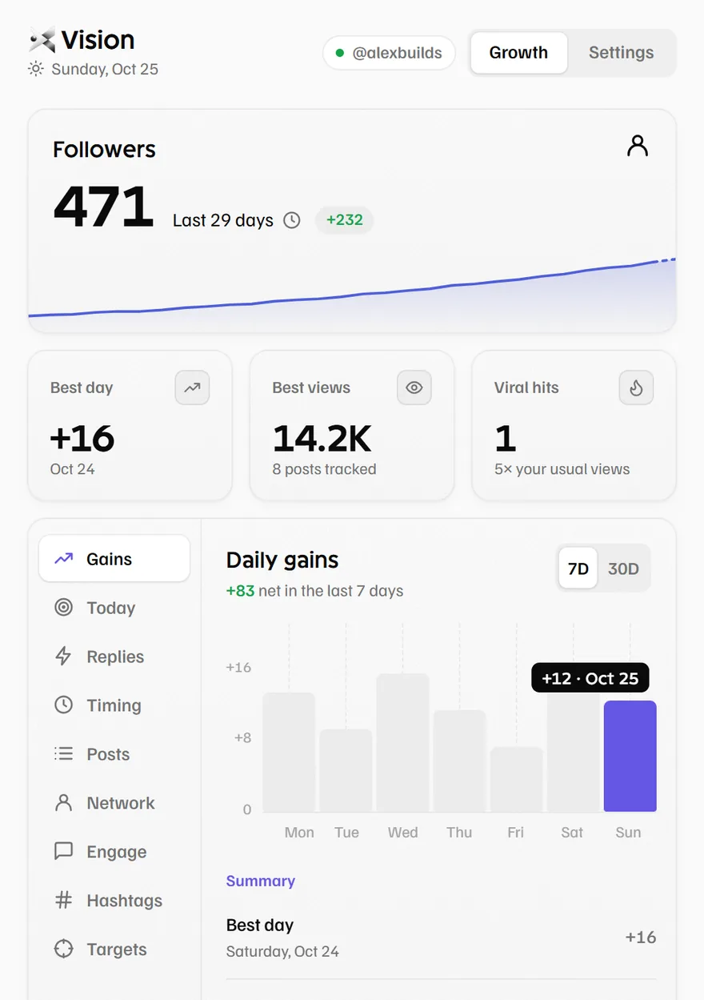
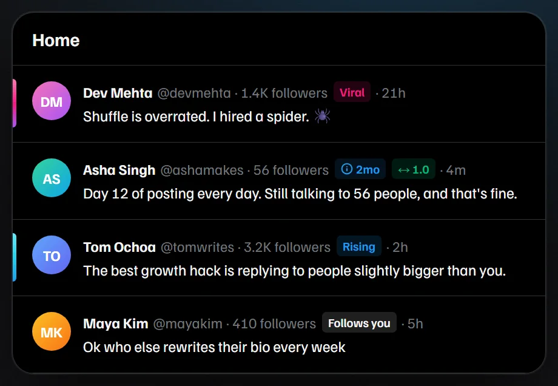
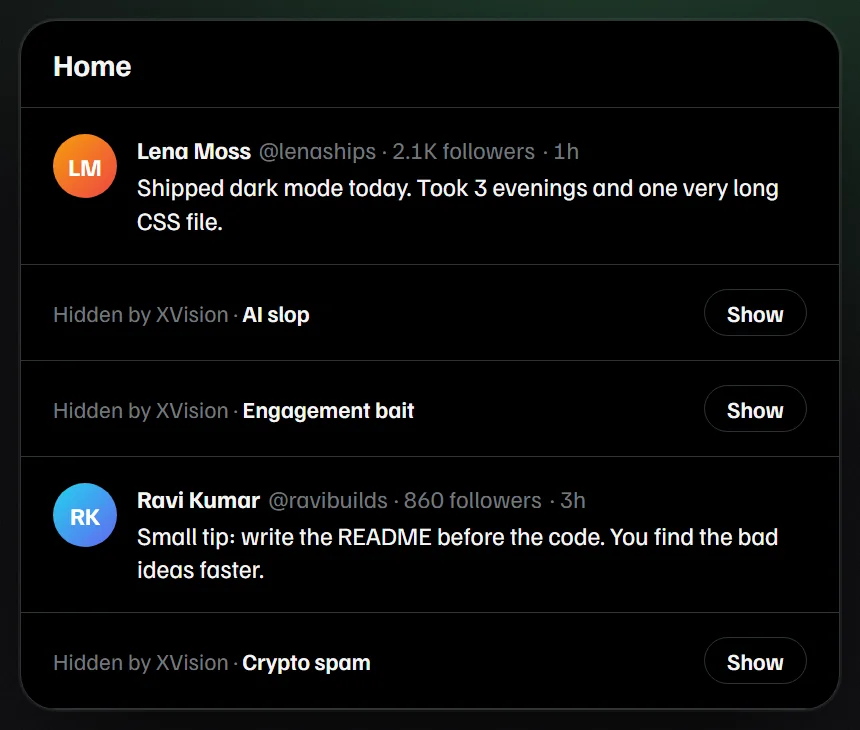

Grow on X with  Real Signals, Not Guesswork
Real Signals, Not Guesswork
See follower counts, follow-back badges and viral posts right on your timeline. Find your best time to post and hide the AI slop. Everything stays in your browser.

Everything You Need to Grow Your Account on X
XVision works it all out from what X already shows you, and puts it right where you scroll.
Growth dashboard
Daily follower gains over 7 and 30 days, your best day, and every post rated against your usual views.
Viral signals
A Viral or Rising badge when a post reaches far beyond its author's followers, with every number on hover.
Who follows back
See who follows you, who likely follows back, and who never does.
Reply early
Fresh posts from bigger accounts that still have few replies, queued for you.
Best time to post
Learns which hours reach furthest from the posts in your own feed.
A calmer feed
AI slop, engagement bait, crypto spam and sensitive media collapse into one quiet line. Tap Show to read one anyway.
Account badges and private notes
Follower counts, account age and follow-back ratio next to every name, plus your own tags that only you can see.
From Busy Timeline to Clear Signal, Watch It Happen
XVision draws small badges right inside x.com, and folds away the posts you don't want to see.


From Download to Insight in 3 Simple Steps
Until XVision is on the Chrome Web Store, install it directly. Works in Chrome, Edge, Brave and Arc.
Download XVision
Get the free zip, then unzip it anywhere on your computer.
Download
Load it in Chrome
Open your extensions page, switch on Developer mode, then click Load unpacked and pick the folder.
chrome://extensionsOpen x.com
Pin XVision to your toolbar and open your timeline. Badges appear next to every name.
Built for Everyone Growing on X
Whether you post for fun, for clients or for your company, the same signals help you decide where to spend your time.
"I built XVision because growing on X felt like guessing. I wanted the numbers that matter right next to each name, without handing my account to another app."
Spot posts that are taking off early, reply while it still counts, and learn which hours your audience is online.
See who your posts reach, find people worth talking to, and keep private notes on customers and partners.
Check an account's size and age before you reply, and skip spam and bait so your feed stays useful.
Rate each post against your usual views to learn what your readers actually want more of.
Know who follows you back and who never does, and focus on the conversations that lead somewhere.
Follow a simple plan from the free guides and watch your daily gains on the growth dashboard.
Simple, Honest Pricing
Everything on this site is free. No trial, no paid plan, no card.
Guides
Practical playbooks for growing on X.
- 120 guides in 12 topics
- Updated for October 2026
- Sources linked in every guide
- Algorithm, reach, money and more
XVision for Chrome
Every feature, on your own timeline.
- Follower counts and account badges
- Viral and Rising post signals
- Growth dashboard and best time to post
- Reply early queue
- Feed filters for AI slop, bait and spam
- Private tags and notes
- No sign-in, no tracking
Free tools
Small tools that run in your browser.
- Twitter video downloader
- Thread maker
- Post length checker
- Engagement rate calculator
XVision never posts, likes, follows or replies for you. Not affiliated with X Corp.
Learn What Works on X in 2026
Plain, sourced playbooks for followers, reach, the algorithm and making money on X.
How Does the X Algorithm Work in 2026?
A plain walkthrough of the open-source ranking code, its weights and what X hasn't confirmed.
Grow on X · 6 minHow to Grow on X in 2026
What changed, what still works for new accounts, and a simple daily plan.
Reach · 6 minWhy Are My Twitter Impressions So Low?
The 8 most common causes on X in 2026, and the fix for each one.
Make money · 6 minHow to Make Money on X in 2026
Original Content Rewards, Subscriptions and more. Real requirements, no hype.
Content · 6 minThe Best Time to Post on X
What the 2026 data says, and a two-week test to find your own hours.
Followers · 6 minHow to See Who Unfollowed Me on X
What X shows and hides, manual checks that work, and the risks of unfollow apps.
Questions? We've Got Answers.
Is XVision really free?
Yes. There's no paid plan, no trial and no ads. XVision is open source under the MIT license, and the guides and tools on this site are free too.
Is my data safe?
XVision runs only on x.com. Your stats, settings and notes are stored in your own browser, and it makes no network requests of its own. There's no account to create. Remove the extension and its data goes with it. Read the full privacy policy.
Can XVision get my X account restricted?
XVision only reads what X already shows you. It never posts, likes, follows or replies for you, so it doesn't automate anything on your account.
Is it on the Chrome Web Store?
Not yet. Until it is, download the zip and load it in Chrome. The three steps above take about a minute.
Which browsers does it work in?
Chrome, Edge, Brave and Arc on desktop. It doesn't run in the X app on your phone.
Does it show who unfollowed me?
No. It shows who doesn't follow you back and your daily follower gains. This guide explains what actually works for tracking unfollows.
Where do the numbers come from?
From the data X already loads in your timeline. XVision counts and compares it in your browser. It isn't X's official analytics, so its numbers can differ from X's own dashboard.
Still have a question? Ask on GitHub.
Start Growing on X Today
Download XVision, open your timeline, and see the signals that were always there.